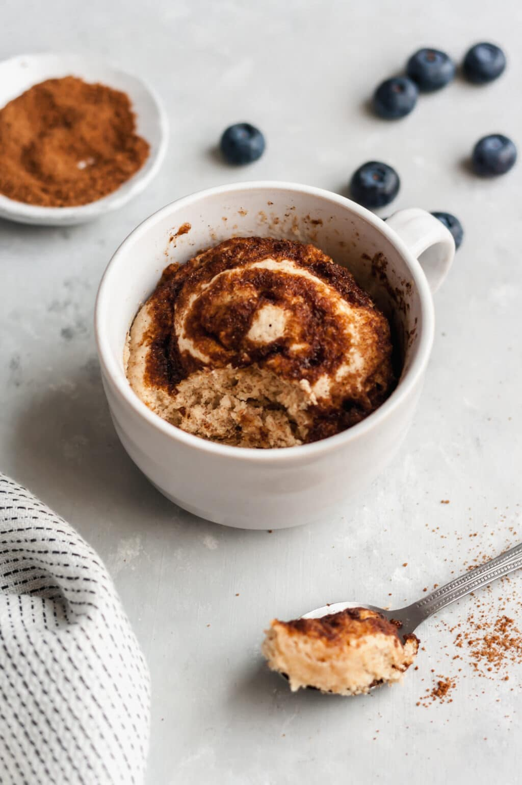

Cinnamon Mug Cake

Description
Watch out mug cake lovers, this might just become your new go-to! This Cinnamon Nut Swirl Mug Cake is like a short cut cinnamon roll with no kneading, no rising, and no rolling required!
It’s the perfect quick fix for when you need just a couple bites of cinnamon-y sweetness without having a whole pan of cinnamon rolls staring you down all day. Or when you don’t want to pay $5 for a cinnamon roll the size of your head. Because while I love cinnamon rolls that big, I don’t need cinnamon rolls that big.
Ingredients
- 1/4 cup all-purpose flour
- 1 Tbsp brown sugar
- 1/4 tsp baking powder
- 1/8 tsp salt
- 1/8 tsp cinnamon
- 1 Tbsp chopped pecans or walnuts (optional)
- 1/2 Tbsp butter, melted
- 2 Tbps milk
- 1/2 Tbsp butter, melted
- 1 tsp brown sugar
- 1/2 tsp cinnamon
- 1 Tbsp powdered sugar
- 1/2 tsp milk
Steps
- In a small mug (about 1 cup volume), stir together the dry ingredients for the mug cake batter: flour, brown sugar, baking powder, salt, cinnamon, and chopped pecans.
- Add the melted butter and milk to the dry ingredients in the mug and stir until a thick batter forms.
- In a separate small bowl or mug, melt the butter for the cinnamon butter swirl (about 15 seconds in the microwave). Stir the brown sugar and cinnamon into the melted butter.
- Drizzle the cinnamon butter swirl over the mug cake batter, then gently fold them together until they are only about half mixed. There should be thick ribbons of the cinnamon butter swirl throughout the batter.
- Microwave the mug cake for 45-55 seconds (for a 1100 watt microwave, cooking time will vary with microwave wattage). The mug cake will create quite a bit of steam as it cooks, so don’t be alarmed. Let the mug cake cool for 1-2 minutes.
- While the mug cake is cooling, stir together the powdered sugar and milk for the icing, using the same small bowl used for the cinnamon butter swirl. The residual cinnamon in the bowl will flavor the icing.
- Drizzle the icing over the mug cake and enjoy while it is still warm.
Return to Homepage